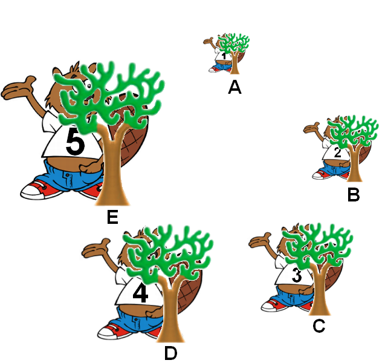
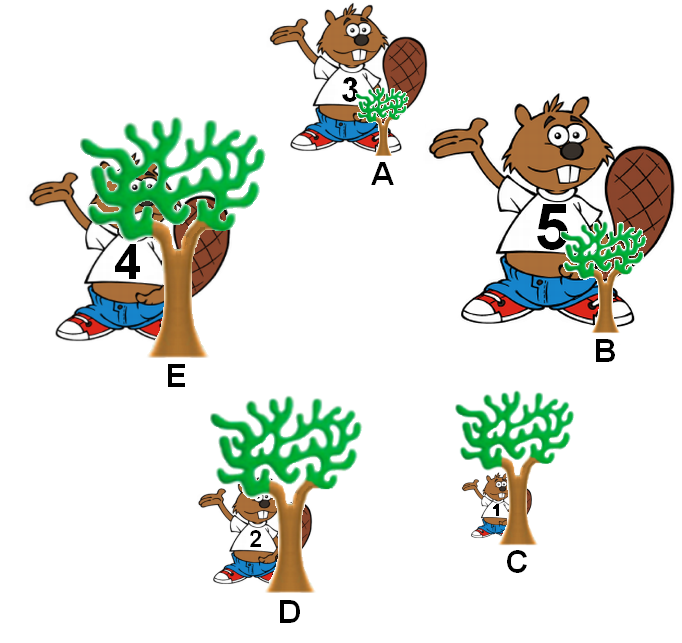

Les Castors jouent à cache cache. Dans l'idéal, chaque Castor essaie de se cacher derrière un arbre aussi grand que lui (voir figure I).
 S'ils jouent à cache-cache sans faire attention, certains Castors peuvent se retrouver derrière des arbres qui sont trop petits (voir figure II).
Pour atteindre la situation idéale I en partant de la situation II, les Castors utilisent la règle suivante. Elle est appliquée arbre par arbre en partant de l'arbre A, dans le sens des aiguilles d'une montre, et pour chaque arbre (A - B - C - D - E - A - B - ...) :
Si le Castor derrière l'arbre est plus grand que celui-ci, il doit échanger sa place avec le Castor suivant dans le sens des aiguilles d'une montre. On passe alors à l'arbre suivant.
Après combien d'échanges est-ce que les Castors atteignent la situation idéale de la figure I ?
Entrez le nombre ici :